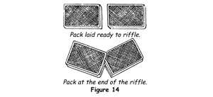
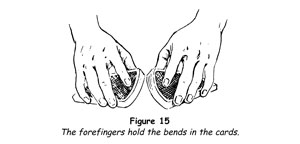
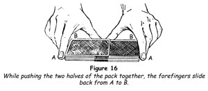
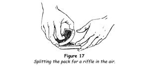
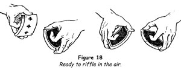

This is the shuffle ordinarily used by card players, but in spite of its almost universal use it is rarely done neatly or even smoothly. Nearly always the cards are bent far too much and then pushed together clumsily. The proper way to execute the shuffle should be acquired at the outset, not for appearances' sake alone, but also because it will enable you to shuffle with ease and certainty. Here is the proper procedure.
1. Place the deck on the table in front of you, its sides parallel to the edge of the table. With your right hand cut off half the cards and place the packet end to end with the other packet (figure 14).

2. Put your hands on the packets, your thumbs against the adjacent inner corners, your index fingers resting on the backs near these ends and your middle, ring and little fingers against the outer sides. Your hands thus assume identical positions on their respective packets.
3. Seize the packets between the thumbs and the middle and ring fingers. Raise the inner corners with the thumbs, bending the cards very slightly against the downward pressure of the index fingers (figure 15).

4. Begin to release or riffle the ends of the cards of each packet so that they interweave. Regulate this release of the corners so that cards fall from each packet alternately, either singly or several at a time.
5. When this action has been completed and all the ends of the cards are interlaced, seize the outer ends of the packets between the thumbs and the index and middle fingers and push the packets inwards, telescoping them until they are almost, but not quite, flush.
6. To square the deck neatly and gracefully, place the thumbs at the middle of the inner side of the deck, their tips touching one another, and the index fingers against the ends near the outer corners. Now move the thumbs outwards along the side of the deck and the index fingers inwards along the ends, and by their pressure squeeze the cards flush (figure 16). When the tips of the thumbs and index fingers meet at their respective inner corners, the deck will be squared perfectly.

The riffle shuffle has its greatest use when the performer is seated at a table. It can effectively be alternated with the overhand shuffle.
RIFFLE SHUFFLE CONTROL
To retain a card or cards on the top or bottom of the deck by means of this shuffle is a simple matter.
Retaining a Card at the Top of the Deck
When the cut is made for the riffle shuffle, the card to be retained becomes the top card of the cut packet. Therefore you have merely to see that all the cards of the left-hand packet have fallen before you release the last few cards of the right-hand packet. When the packets are telescoped the required card will again be the top card of the deck.
A packet of six or eight cards can be retained on the top in the same way by holding them back until all the cards of the left-hand packet have fallen. It is not advisable, however, to use the manoeuvre with more than that number of cards.
Retaining the Bottom Card or Cards
In this case the cards to be controlled are on the bottom of the left-hand packet. In grasping that packet with the left thumb and fingers, do not seize all the cards; allow a small packet to remain on the table and raise only the corners of those above it. The first cards to fall from the right-hand packet will fall on top of these cards; therefore, when the deck is squared, the card or cards being controlled will again be on the bottom of the deck.
Sometimes it becomes necessary to add one card to the top of the deck. This can easily be done by the riffle shuffle. In lifting the corners of the left-hand packet, press the index finger on the top card of that packet and draw it a little over the left thumb. It is an easy matter then to hold it back until the last card of the right-hand packet has been released.
Riffle Shuffle in the Air
It is surprising that while many people know how to make a neat riffle shuffle at the table few know how to make the same shuffle away from a table. To be able to riffle shuffle in the air is a particularly useful weapon for the card conjuror who has to perform under varying conditions. This form of the riffle shuffle is not difficult, but it does require some practice to perform it neatly.
1. Take the pack face downwards in the right hand with the thumb at one end, the middle, ring and little fingers at the other, and the index finger bent so that its nail rests against the middle of the back of the top card. Turn the pack to a vertical position with the thumb at the top and the faces towards the left.
2. Place the left hand, palm upwards, a couple of inches to the left of and a little above the tips of the right fingers. Bend the middle of the pack outwards by pressing outwards, with the right forefinger at the middle and the thumb and fingers inwards at the ends. Allow about half the cards to fall forwards on to the left fingers in a horizontal position (figure 17).

3. Place the tip of the left thumb momentarily on the back of this packet and move the left forefinger up to take its place.
4. With the tips of the right fingers, bend the left-hand packet upwards and place the left thumb on the middle of its upper end. The two packets are thus held facing each other and with exactly the same grip by each hand - thumbs at the top, index fingers at the middle of the backs, and the other three fingers gripping the lower ends (figure 18).

5. Turn both hands palm downwards, bend the ends of both packets upwards by pressure against the forefingers, and hold the packets with the inner ends close together in the shape of a shallow V, the point of which is away from the body.
6. Allow the cards to slip from each thumb alternately, interlacing the corners.
7. Press the packets flush by bringing the hands together, then square the pack.
If the positions are taken correctly it will be found that the lower end of each packet will be held firmly between the first phalanx of the index finger at the back and the first phalanxes of the other three fingers at the face. The grip must be held firmly until all the cards have been riffled off by the thumbs.
TRICKS WITH THE RIFFLE SHUFFLE
An Instinct for Cards
The purpose of the riffle shuffle is to mix the cards thoroughly, its very essence being that after a genuine shuffle the position of any particular card cannot be known. You may therefore find it hard to believe that a card unknown to you can be placed anywhere in the deck and the cards then genuinely riffle shuffled and cut, yet you can infallibly find that card and reveal it. The secret is so ingenious, and yet so simple, that this is one of the few feats that can be repeated without fear of discovery. The only skill required is the ability to riffle shuffle the deck.
1. Before you begin this trick, place the thirteen cards of one suit, say, diamonds, in sequence from ace to king, at the top of the deck. Put the deck in its case and the case in your pocket.
2. Take the case from your pocket and remove the cards and shuffle them, retaining the diamond sequence at the top by means of the overhand shuffle control, retaining top stock. Cut off about two-thirds of the deck and complete the cut. The sequence of diamonds will then run from about the twentieth card, the ace, to the thirty-third, the king.
3. Place the pack before a spectator, request him to cut it, remove the card he cuts to, replace the cut and square the deck perfectly. You may add, 'Better cut somewhere near the middle, so that I cannot possibly know the card to which you cut.' But even without this admonition most people will cut somewhere near the middle, between the twentieth and thirty-third cards; thus they are sure to remove one of the diamonds. Turn away and move a pace or two from the table so that no one can suspect you might see the card.
4. With your back still turned, instruct the spectator to show the card to everyone; then ask him to cut the pack anywhere he likes, replace the card at that exact point, square the deck and give it a riffle shuffle.
It is most effective to have the spectator himself make the shuffles and cuts, but if there is no one present who can shuffle cards neatly, you may make the shuffles yourself. In such a case call particular attention to the genuineness of the shuffles.
5. Next have the spectator cut the pack and complete the cut, riffle shuffle again, and finally cut again and complete the cut. Under these conditions you will find that everyone will be confident that you cannot possibly discover the selected card.
6. Turn around and take the pack, run through it slowly, glancing at the spectator from time to time as though studying his expression. You will find that despite the shuffles and cuts, which seemingly mix the cards indiscriminately, actually the diamonds have been distributed among the other cards in sequence, with each succeeding higher value to the right. This is because the first shuffle distributed them through half the deck and the second shuffle throughout the entire deck. The cuts do not have any effect upon the sequence, though they may affect its starting point.
When the chosen card was replaced in the pack, it was not placed at the point from which it was taken; therefore, in order to find it, look for one card of that suit which is out of sequence. Let us say that you find that the diamonds run in the following order:
4 - 5 - 6 - K - 7 - 8 - 9 - 10 - J - Q - A - 2 - 3
The chosen card is the king, the only card out of sequence.
7. Remove the king and place it face downwards on the table. Rub it gently with the tip of your right second finger and have the selected card named. Turn the card face upwards showing that you have the correct card.
This perplexing feat may also be performed with the pack in hand. With the diamond sequence at the centre, spread the cards and have one removed, making certain that it is taken from among the diamonds, an easy enough matter. Have it replaced at a point other than that from which it was taken. The rest follows as in the out-of-hand method.
Mirror of the Mind
This is another method of performing the preceding effect, but here the necessary preparation is made more quickly. The method is not so clean-cut, but we give it as an alternative procedure.
1. Place the thirteen cards of one suit, say, hearts, in any order on top of the pack. Note and remember the top card, which we shall assume is the six of hearts.
2. Take the cards out of the case and make the overhand shuffle control, retaining top stock, thus retaining the hearts on the top of the pack.
3. Hand the deck to a spectator, turn your back and move away a pace or two. Request him to deal any small number of cards, from one to twelve, face downwards on the table, urging him to do this silently so that you cannot count the cards dealt. When he has done this, tell him to look at and remember the next card and replace it on the cards he still holds, then pick up the packet of dealt cards and place it on top of all. The bottom card of this packet is your key card, the six of hearts, the first card dealt, and it is now directly above the chosen card.
4. As in the preceding feat, have the pack riffle shuffled twice, with a completed cut after each shuffle.
5. Take the pack and spread the cards face upwards on the table from left to right. Have the spectator grasp your wrist, then pass your hand over the line of cards from end to end, urging him to concentrate upon his card. When you see your key card, the six of hearts, look for the next heart to its right. This will be the chosen card. Move your hand away from this card and then abruptly, as though drawn by a strong magnetism, place your forefinger upon it and push it out from the spread.
Ultra Card Divination
There is a fascination in the thought that the future can be foretold. This trick capitalises on this interest in divination, but is actually purely mathematical. You write down the name of a card on a slip of paper and place it to one side. A card is selected and this is the one you prophesied.
1. Borrow a pack of cards and, holding it face upwards, count the cards into your right hand, reversing their order in the count, under pretence of making sure that it is a full deck. Note the thirty-fourth card and remember it, because this card which will be thirty-fourth from the top of the pack after the count, is the one you will 'predict'.
2. Take a slip of paper and on it write the name of the thirty-fourth card. After writing the prediction, fold the slip twice and then stand it on the edges with the pencil underneath it (figure 19).
3. Cut off about half the pack, but not more than twenty-six cards, and have these shuffled and spread face downwards on the table.
4. Address a spectator, saying, 'Kindly push a card out of the spread.' When he has done so, have a second and third spectator also push out a card. Gather the rest of the cards and replace them on the pack.
5. Hand the deck to yet another spectator and have him turn the first of the three cards face upwards. Instruct him to deal as many cards below it, face downwards, as may be needed to bring its value to ten. For example, if the card is a 7, he will deal three cards. If a 2, he will deal eight cards. But if the card is a court card it is arbitrarily called a 10, and in this case no cards are dealt because none is needed.
6. Have the same done with the other two cards.
7. Now tell the spectator to add the values of the three cards which were selected and deal that number of cards from the pack and place the next card aside.
8. Point out that the card has been selected in the fairest possible manner. 'Before you even touched the cards,' you say, 'I wrote the name of a card on a slip of paper and thereafter never touched it.' Lift the pencil with the slip on it and offer it to the spectator. 'Will you read what I wrote?' He reads aloud the name of the card. Slowly turn the card face upwards. It is the card that you predicted!